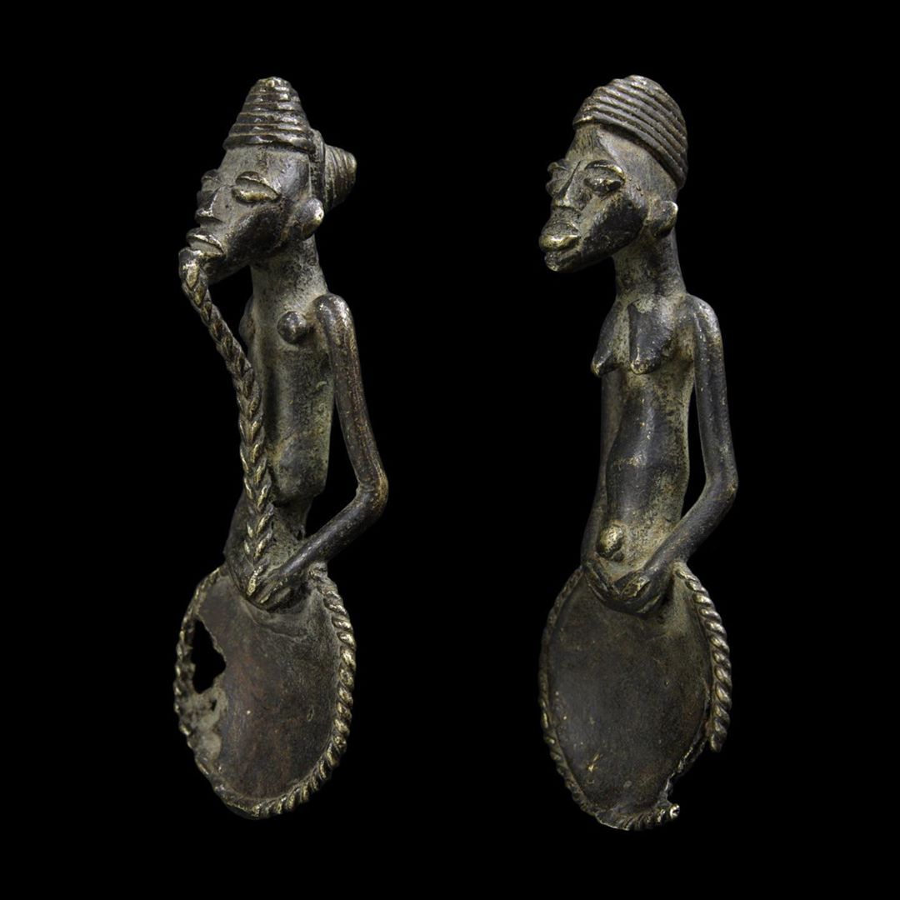

The Akan naming system.
Akan names are derived from Ghanian culture.
Frequently in Ghana, children are given the Akan people of Ghana frequently name their children after the day of the week they were born and the order in which they were born. These "day names" have further meanings concerning the soul and character of the person. Middle names have considerably more variety and can refer to their birth order, twin status, or an ancestor's middle name. This naming tradition is shared throughout West Africa and the African diaspora. During the 18th–19th centuries, slaves in the Caribbean from the region that is modern-day Ghana were referred to as Coromantees. Many of the leaders of slave rebellions had "day names" including Cuffy or Kofi, Cudjoe or Kojo, and Quamina or Kwame/Kwamina. Most Ghanaians have at least one name from this system, even if they also have an English or Christian name. Notable figures with day names include Ghana's first president Kwame Nkrumah and former United Nations Secretary-General Kofi Annan. In the official orthography of the Twi language, the Ashanti versions of these names as spoken in Kumasi are as follows. The diacritics on á a̍ à represent high, mid, and low tone (tone does not need to be marked on every vowel), while the diacritic on a̩ is used for vowel harmony and can be ignored. (Diacritics are frequently dropped in any case.) Variants of the names are used in other languages, or may represent different transliteration schemes. The variants mostly consist of different affixes (in Ashanti, kwa- or ko- for men and a- plus -a or -wa for women). For example, among the Fante, the prefixes are kwe- and e-, respectively. Akan d̩wo is pronounced something like English Joe, but there do appear to be two sets of names for those born on Tuesday.iven their first name as a 'day name' which corresponds to the day in the week they were born. Here are Ghanian day names.
YEAR OF BIRTH
BIRTH MONTH:
Day OF BIRTH
GENDER
Male
Female